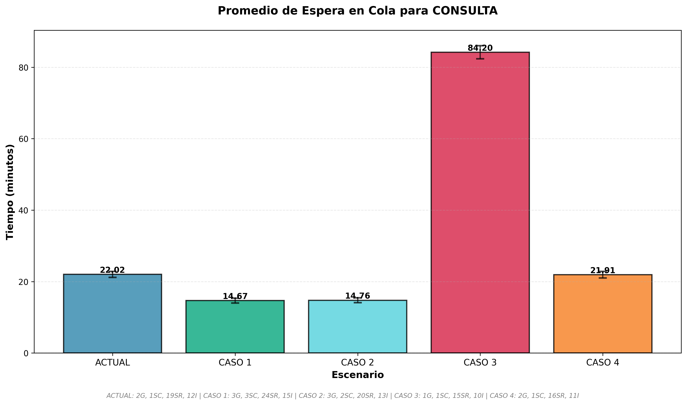
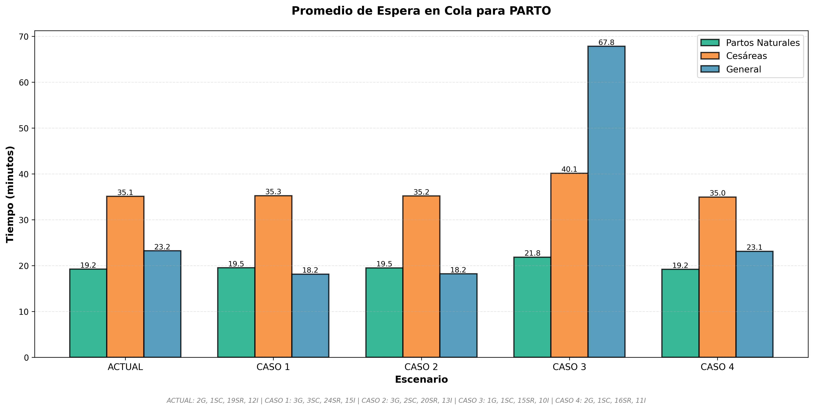
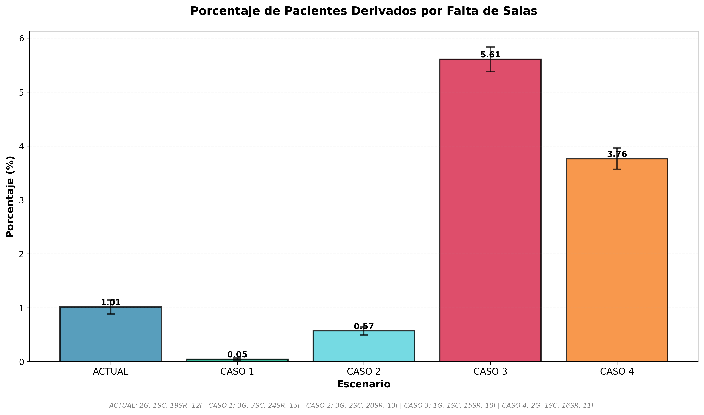
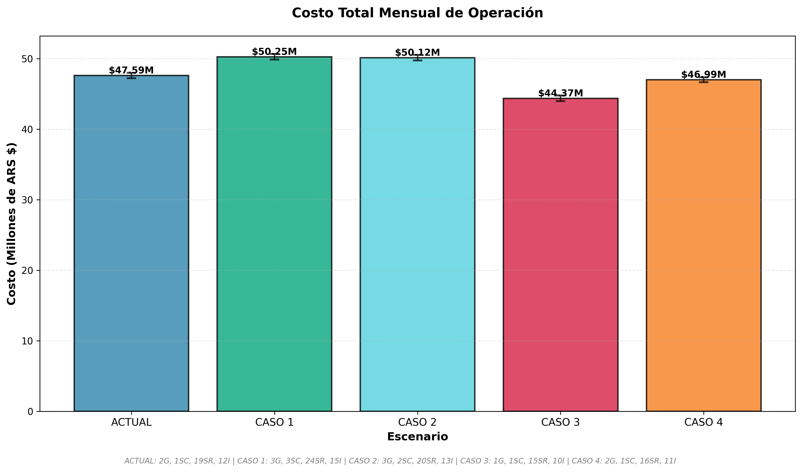
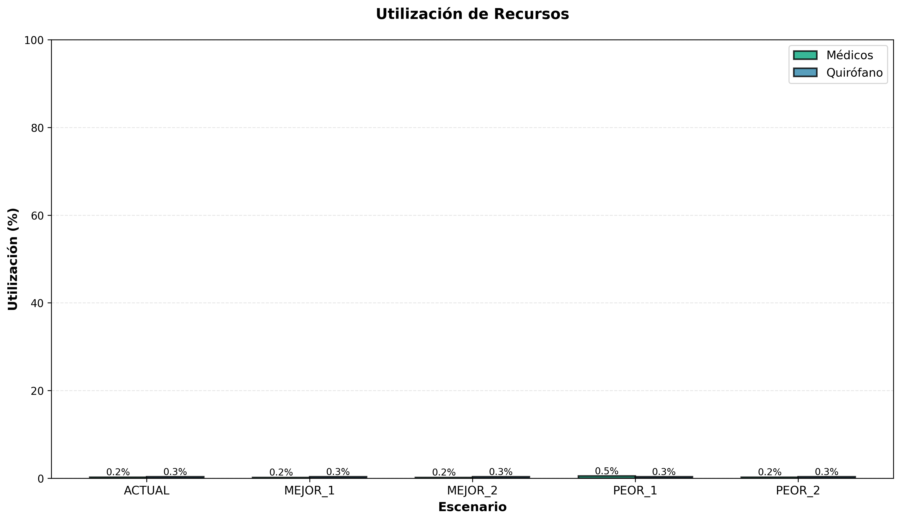
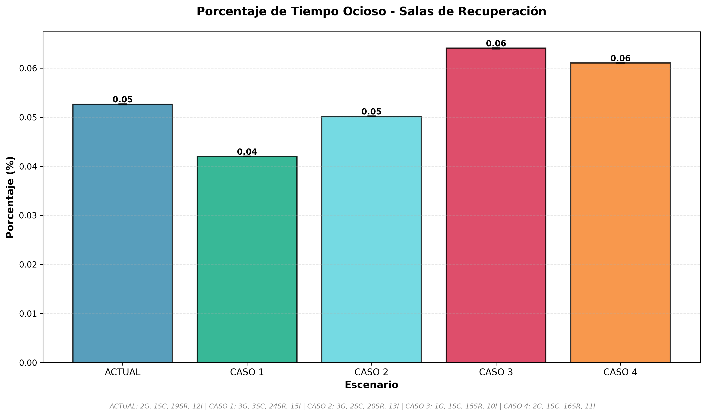
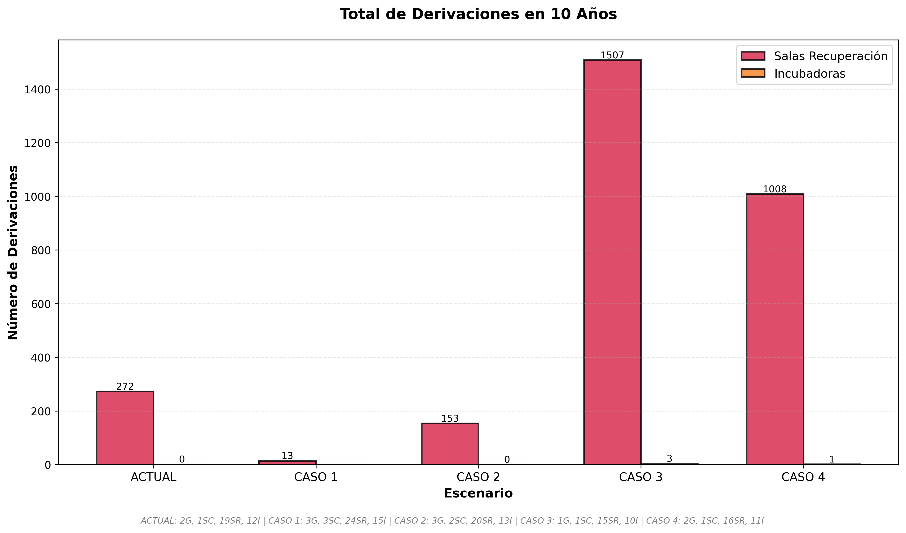
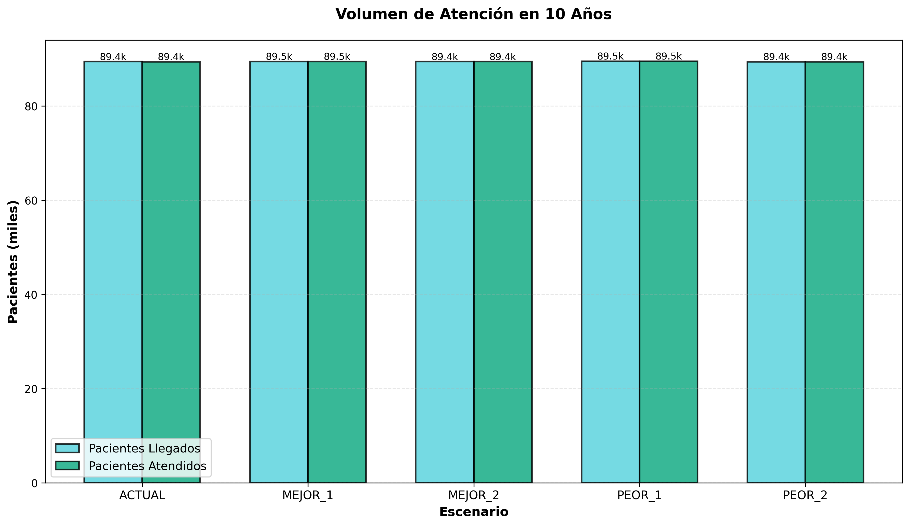
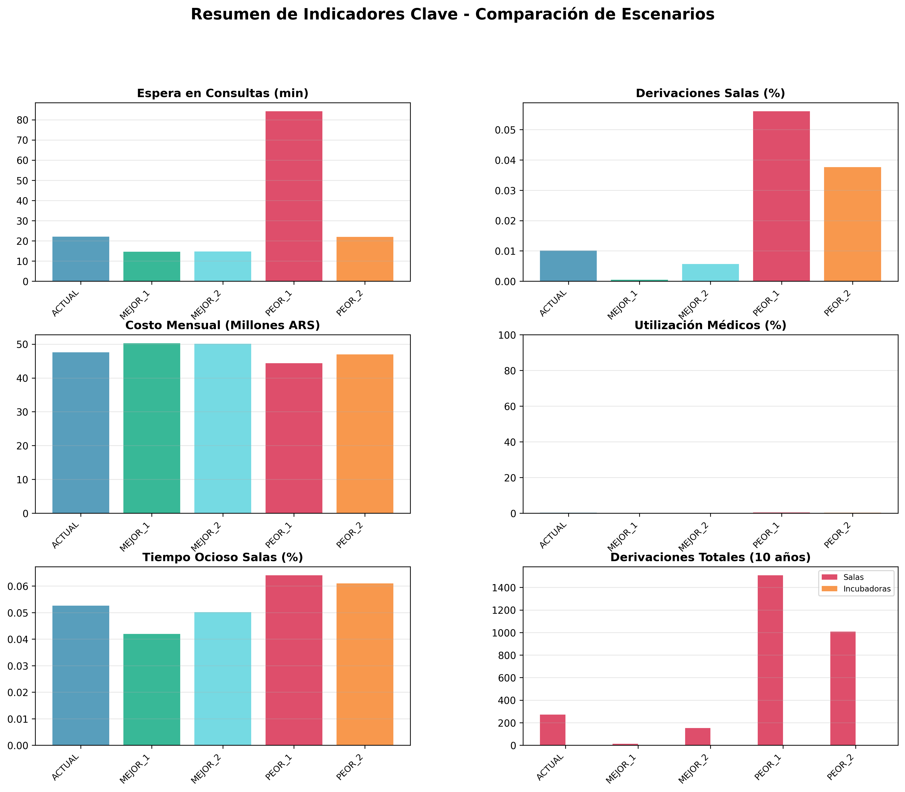

📊 Resumen Ejecutivo
🎯 Objetivo del Estudio
Evaluar 5 configuraciones diferentes del hospital para determinar la óptima en términos de calidad de servicio, costos operativos y satisfacción del paciente.
Configuraciones Evaluadas
| Escenario | Médicos | Consultorios | Salas Recup. | Incubadoras | Categoría |
|---|---|---|---|---|---|
| ACTUAL Base | 2 | 1 | 19 | 12 | Configuración actual |
| MEJOR_1 Óptimo | 3 | 3 | 24 | 15 | Máxima calidad de servicio |
| MEJOR_2 Balance | 3 | 2 | 20 | 13 | Balance costo-calidad |
| PEOR_1 No viable | 1 | 1 | 15 | 10 | Configuración mínima |
| PEOR_2 Subóptimo | 2 | 1 | 16 | 11 | Servicio comprometido |
📌 Hallazgos Principales
🔵 ACTUAL
🟢 MEJOR_1 ⭐
🟢 MEJOR_2 🏆
🔴 PEOR_1 ❌
🟠 PEOR_2 ⚠️
📈 Gráficos Comparativos
⏱️ Espera en Consultas
🤰 Espera en Partos
📊 Derivaciones por Falta de Salas
💰 Costos Mensuales
📈 Utilización de Recursos
🏥 Tiempo Ocioso de Salas
🚑 Derivaciones Totales (10 años)
👥 Volumen de Atención
🕸️ Comparación Multi-Indicador (Radar)

📊 Resumen de Indicadores Clave
⚖️ Comparación Detallada
🆚 ACTUAL vs. MEJOR_2 (Recomendado)
| Indicador | ACTUAL | MEJOR_2 | Diferencia | Mejora |
|---|---|---|---|---|
| Espera Consultas (min) | 22.02 | 14.76 | -7.26 | -33.0% |
| Derivaciones Salas (total 10 años) | 272 | 153 | -119 | -43.8% |
| Espera Partos General (min) | 23.23 | 18.20 | -5.03 | -21.7% |
| Costo Mensual (ARS $) | 47,594,602 | 50,122,237 | +2,527,635 | +5.3% |
| Inversión Inicial (ARS $) | 0 | 10,000,000 | +10,000,000 | Requerida |
💡 Conclusión MEJOR_2
MEJOR_2 es la opción RECOMENDADA. Ofrece mejoras significativas en calidad de servicio con un incremento de costo razonable (+5.3%) y una inversión inicial moderada ($10M). El ROI estimado es de 2-3 años.
🆚 ACTUAL vs. MEJOR_1 (Máxima Calidad)
| Indicador | ACTUAL | MEJOR_1 | Diferencia | Mejora |
|---|---|---|---|---|
| Espera Consultas (min) | 22.02 | 14.67 | -7.35 | -33.4% |
| Derivaciones Salas (total 10 años) | 272 | 13 | -259 | -95.2% |
| Espera Partos General (min) | 23.23 | 18.15 | -5.08 | -21.9% |
| Costo Mensual (ARS $) | 47,594,602 | 50,251,338 | +2,656,737 | +5.6% |
| Inversión Inicial (ARS $) | 0 | 20,000,000 | +20,000,000 | Requerida |
💡 Conclusión MEJOR_1
MEJOR_1 ofrece la MÁXIMA CALIDAD. Prácticamente elimina las derivaciones (95% menos) con un incremento de costo moderado (+5.6%). Requiere mayor inversión inicial ($20M) pero garantiza excelencia en el servicio. ROI estimado: 3-4 años.
❌ Escenarios NO Viables
| Escenario | Problema Principal | Impacto | Recomendación |
|---|---|---|---|
| PEOR_1 | Recursos insuficientes |
• Espera 84 min (vs 22 min ACTUAL) • 1,508 derivaciones (vs 272 ACTUAL) • Médicos sobrecargados (48% util.) |
NO IMPLEMENTAR |
| PEOR_2 | Derivaciones excesivas |
• 1,008 derivaciones (4x más que ACTUAL) • Ahorro mínimo (-1.3%) • Servicio comprometido |
NO RECOMENDADO |
✅ Recomendaciones Finales
🏆 OPCIÓN RECOMENDADA: MEJOR_2
ACTUALIZAR A MEJOR_2 - Mejor balance costo-beneficio con inversión moderada
✓ Ventajas:
- Inversión inicial moderada de $10,000,000
- Reducción de espera en consultas de 33% (22→15 min)
- Reducción de derivaciones de 44% (272→153)
- Mejora en espera de partos de 22% (23→18 min)
- Incremento de costo razonable (+5.3%)
- ROI estimado: 2-3 años
📋 Cambios Requeridos:
- Contratar +1 Médico (2→3)
- Habilitar +1 Consultorio (1→2)
- Agregar +1 Sala de Recuperación (19→20)
- Instalar +1 Incubadora (12→13)
🥇 ALTERNATIVA PREMIUM: MEJOR_1
ACTUALIZAR A MEJOR_1 - Para máxima calidad de servicio
✓ Ventajas:
- MÁXIMA CALIDAD DE SERVICIO posible
- Prácticamente elimina derivaciones (95% menos)
- Mayor reducción de espera en consultas (33%)
- Mejor espera en partos (22% menos)
- Utilización óptima de médicos (16%)
- ROI estimado: 3-4 años
📋 Cambios Requeridos:
- Contratar +1 Médico (2→3)
- Habilitar +2 Consultorios (1→3)
- Agregar +5 Salas de Recuperación (19→24)
- Instalar +3 Incubadoras (12→15)
- Inversión inicial: $20,000,000
⚠️ MANTENER ACTUAL (Opción conservadora)
Válido solo si:
- El presupuesto está muy ajustado
- No se puede hacer inversión inicial en corto plazo
- Se requiere tiempo para planificar la mejora
Nota: ACTUAL ofrece buen servicio (22 min espera, 0.01% derivaciones) pero no es óptimo. Considerar mejora a mediano plazo.
📅 Plan de Implementación Sugerido
| Fase | Plazo | Acciones | Objetivo |
|---|---|---|---|
| Fase 1 | 0-6 meses |
• Mantener ACTUAL • Preparar presupuesto • Planificar infraestructura |
Preparación y financiamiento |
| Fase 2 | 6-12 meses |
• Implementar MEJOR_2 • Contratar médico adicional • Habilitar infraestructura |
Mejora significativa del servicio |
| Fase 3 | 1-2 años |
• Evaluar resultados MEJOR_2 • Si es positivo, considerar upgrade a MEJOR_1 • Monitorear KPIs |
Optimización continua |
📊 Métricas de Éxito Post-Implementación
⏱️ Tiempos de Espera
🚑 Derivaciones
👥 Recursos Humanos
💰 Retorno Inversión
🎯 Detalle de Escenarios
🔵 ACTUAL
Configuración actual actualizada del hospital
✓ Viable - Buen desempeño general, adecuado para corto plazo mientras se prepara inversión.
🟢 MEJOR_1 ⭐
Configuración optimizada principal - maximiza calidad de servicio
🏆 Máxima Calidad - Prácticamente elimina derivaciones, excelente para hospitales que priorizan excelencia. ROI: 3-4 años.
🟢 MEJOR_2 🏆
Configuración optimizada alternativa - balance costo-calidad
⭐ RECOMENDADO - Mejor balance costo-beneficio. Mejoras significativas con inversión moderada. ROI: 2-3 años.
🔴 PEOR_1 ❌
Configuración mínima - alta probabilidad de derivaciones
✗ NO VIABLE - Esperas inaceptables (84 min), derivaciones 5x mayores, médicos sobrecargados. NO IMPLEMENTAR.
🟠 PEOR_2 ⚠️
Configuración subóptima - servicio comprometido
⚠ NO RECOMENDADO - Derivaciones 4x mayores que ACTUAL por ahorro mínimo (-1.3%). No justifica deterioro del servicio.